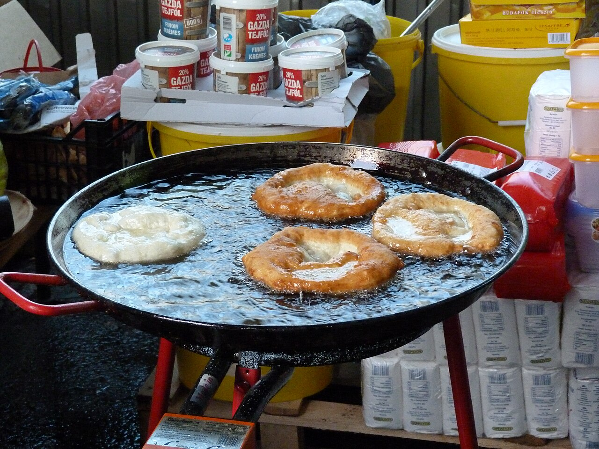
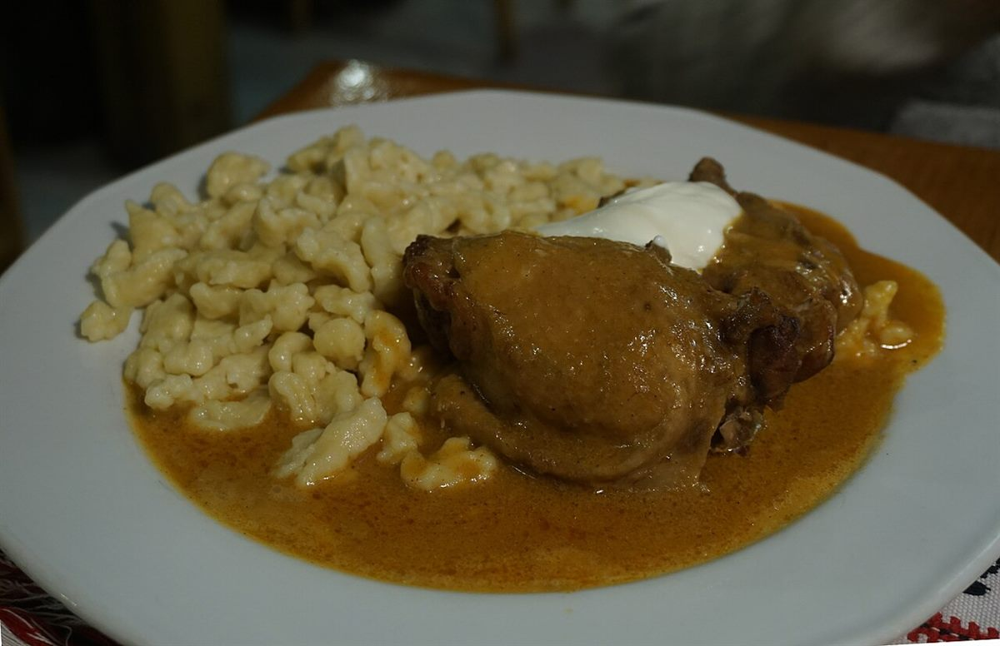
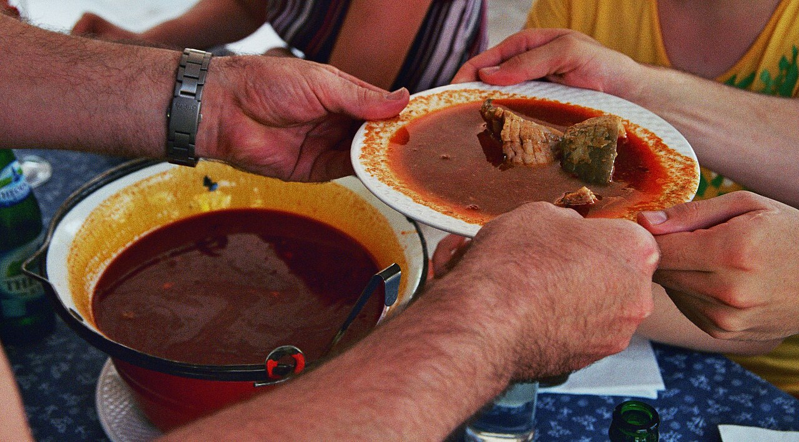
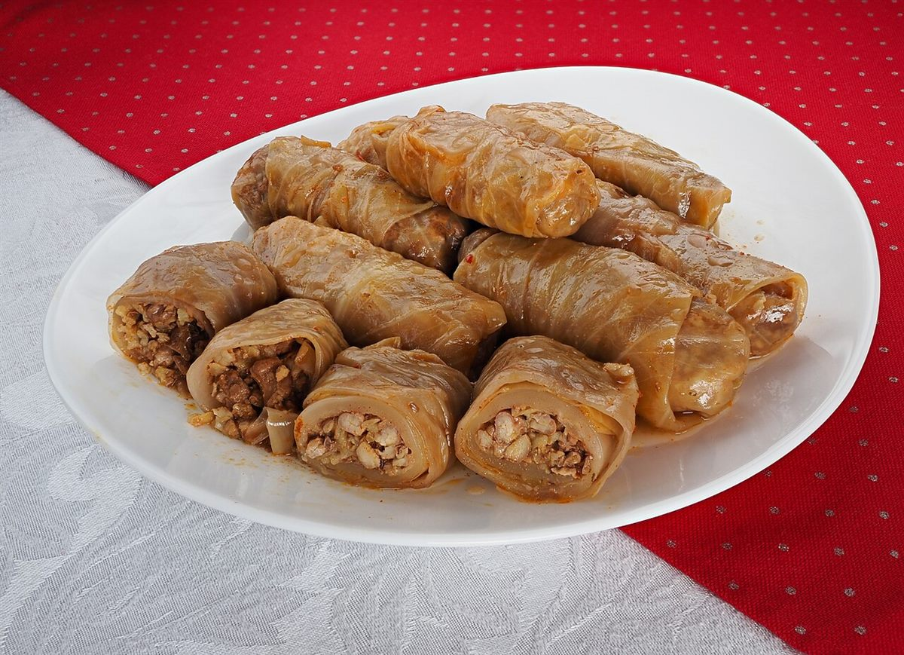
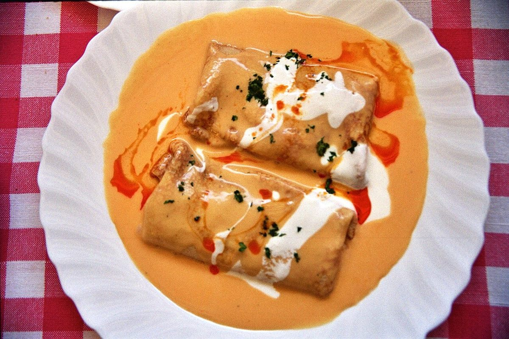
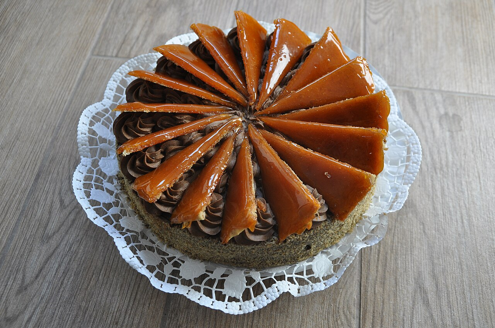
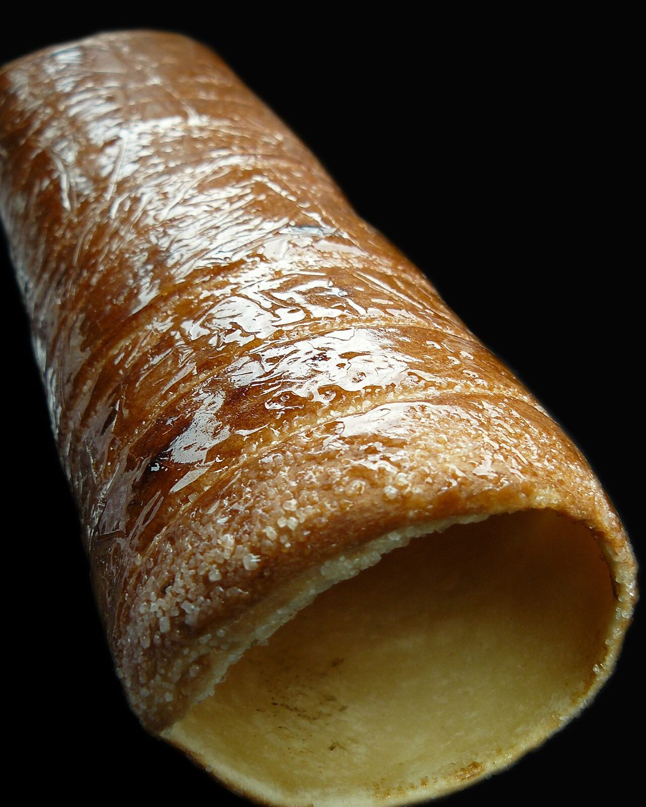
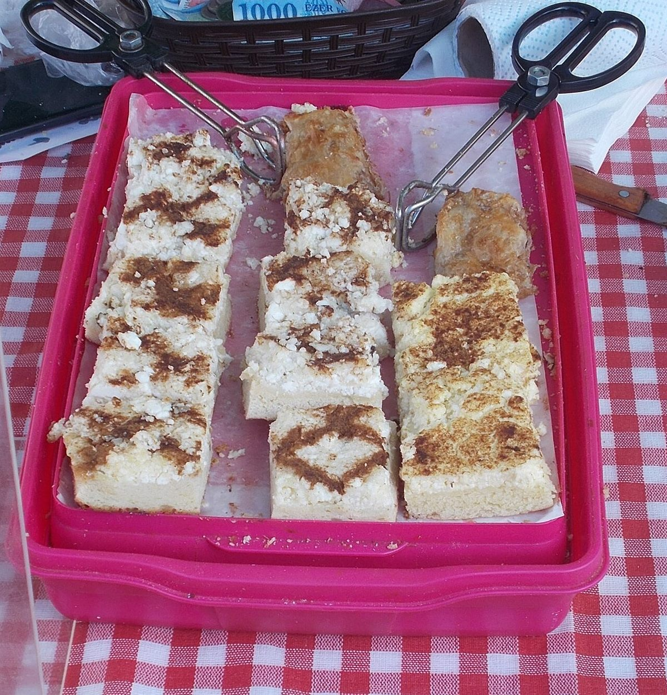

대표 음식 9종
사진은 Wikimedia Commons에 공개된 실제 촬영본이며, 저작자와 라이선스를 각 사진 아래에 적었습니다. 촬영한 식당·지역·조리법에 따라 실제 모습은 다를 수 있습니다.
-

사진: Christo · CC BY-SA 4.0 · Wikimedia Commons 굴야시 수프Gulyásleves
소고기·감자·채소에 파프리카를 넣어 끓인 대표적인 헝가리 수프. 흔히 영어권의 걸쭉한 스튜형 굴라시와 이미지가 혼동된다.
-

사진: Elekes Andor · CC BY-SA 4.0 · Wikimedia Commons 랑고시Lángos
기름에 튀긴 납작한 반죽 위에 마늘·사워크림·치즈 등 토핑을 올려 먹는 대표 길거리 간식.
-

사진: Sumit Surai · CC BY-SA 4.0 · Wikimedia Commons 치킨 파프리카시Paprikás csirke
파프리카를 이용해 닭고기를 끓인 뒤 사워크림을 섞어 소스를 만드는 가정식.
자세히 보기
- 주재료
- 닭고기, 파프리카, 양파, 사워크림
- 맛과 식감
- 부드럽고 진한 파프리카 소스
- 현지 식문화
- 노케들리(nokedli) 반죽과 자주 함께 낸다.
출처: visithungary.com
-

사진: Themightyquill · CC BY-SA 2.5 · Wikimedia Commons 헐라슬레Halászlé
담수어를 파프리카 육수에 넣어 끓이는 매콤한 생선 수프로 세게드·바야 등 지역별 스타일이 있다.
-

사진: Petar Milošević · CC BY-SA 4.0 · Wikimedia Commons 양배추 롤Töltött káposzta
고기와 쌀을 양배추 잎에 싸서 익히는 음식. 새콤한 양배추나 사워크림과 함께 내는 방식도 있다.
-

사진: Themightyquill · CC BY 2.5 · Wikimedia Commons 호르토바지 팔라친타Hortobágyi palacsinta
얇은 팬케이크 속에 고기 속재료를 넣고 파프리카 소스를 뿌려 먹는 짭짤한 요리.
자세히 보기
- 주재료
- 얇은 크레프, 고기 속, 파프리카 소스
- 맛과 식감
- 부드러운 크레프와 진한 소스
- 현지 식문화
- 지명에서 이름을 가져왔으나 반드시 그 지역에서만 먹는 음식은 아님
출처: visithungary.com
-

사진: Christo · CC BY-SA 4.0 · Wikimedia Commons 도보시 토르타Dobostorta
얇은 스펀지케이크와 초콜릿 버터크림을 겹겹이 쌓고 윗면을 단단한 캐러멜로 마감한 케이크.
자세히 보기
- 주재료
- 스펀지 반죽, 초콜릿 버터크림, 캐러멜
- 맛과 식감
- 달콤·쌉싸름·바삭한 캐러멜
- 현지 식문화
- 19세기 제과문화와 도시 카페문화를 연결하기 좋다.
출처: visithungary.com
-

사진: Cyril5555 · CC BY-SA 3.0 · Wikimedia Commons 굴뚝빵Kürtőskalács
반죽을 원통형 틀에 감아 구운 뒤 설탕·견과류 등을 입히는 빵과자.
자세히 보기
- 주재료
- 효모 반죽, 설탕, 시나몬 또는 견과류
- 맛과 식감
- 겉은 캐러멜 풍미·속은 부드러움
- 현지 식문화
- 트란실바니아와 연계된 역사와 현대 축제 문화 맥락을 함께 설명
출처: visithungary.com
-

사진: Globetrotter19 · CC BY-SA 4.0 · Wikimedia Commons 레테시Rétes
얇게 늘린 페이스트리에 사과·체리·치즈·양귀비씨 등의 속을 넣어 구운 슈트루델 계열 디저트.
함께 알아두면 좋은 점
- 이웃 나라와 비교: 체코식 굴라시 ↔ 헝가리 굴야시; 체코 크네들리키 ↔ 헝가리 노케들리. - 알레르기·식단: 성분과 조리법은 식당·가정마다 달라 일반화할 수 없습니다. 알레르기나 식단 제한이 있다면 주문 전에 직접 확인하세요.